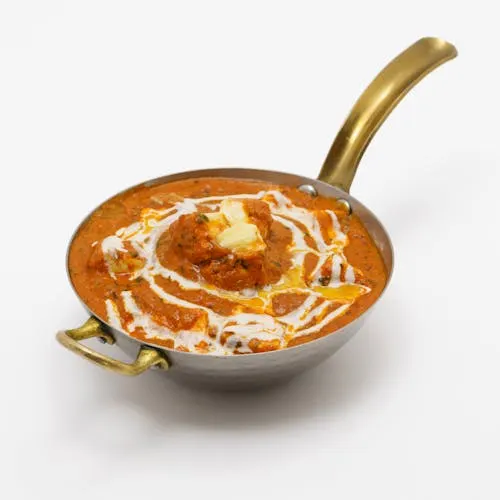

Butter Chicken Recipe

Recipe
arinate: Toss 1.5 lbs boneless chicken (breasts or thighs), cut into chunks, with 1/2 cup yogurt, 1 tbsp lemon juice, 1 tsp garam masala, 1/2 tsp turmeric, 1 tsp chili powder, and salt. Let sit for at least 30 minutes (or up to 4 hours).
Cook Chicken: Sear the marinated chicken in a pan with 2 tbsp butter or oil until browned. Remove and set aside.
Make Gravy: In the same pan, melt 3 tbsp butter. Add 1 diced onion, 2 tbsp ginger-garlic paste, 1 tsp cumin, 1 tsp garam masala, 1/2 tsp chili powder, and 1 cinnamon stick. Cook until fragrant. Add 1 cup tomato puree or crushed tomatoes, 1/2 tsp sugar, and 1/2 tsp salt. Simmer for 10 minutes.
Simmer: Return chicken to the pan. Add 1/2 cup heavy cream and 1/4 cup water. Simmer for 10–15 minutes until sauce thickens. Stir in 1–2 tbsp butter for richness.
Serve: Garnish with fresh cilantro and serve with naan or basmati rice.
Home